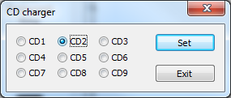

NOTE: The CD Charger allows to change the disk currently inserted in the virtual CD drive. The user can select the disk volume by clicking on the corresponding radio button (from CD1 to CD9) and giving confirmation by clicking on the "Set" button. The "Exit" button will leave the panel without any change.
It should be noted that the CD change refers to both the virtual file system and the vemulated CD audio tracks, though the switch may not happen exactly at the same time since it happens in any case when a new operation is performed either on the CD file system or virtual CD audio.
BEWARE: there is no control on the correctness of the user's choice, so clicking and making confirmation for a wrong disk number will likely produce an error.